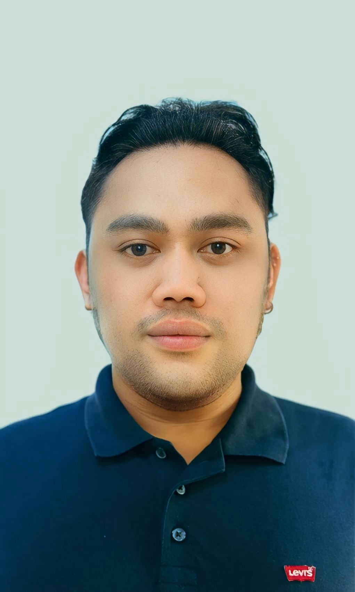

Turning risk and operational complexity into practical controls.
Risk and financial crime professional with 8+ years across fraud operations, AML/KYC, risk assessments, financial operations, process improvement and team leadership.

Risk, compliance and operations with a practical mindset.
I specialize in translating risk requirements, policies and operational challenges into repeatable processes, evidence-based decisions and effective controls.
My experience spans fraud prevention, transaction monitoring, KYC/CDD, risk operations, financial operations and emerging AI governance work. I am comfortable working across frontline operations, quality, escalation and stakeholder coordination.
What I bring to a risk organization.
Fraud & Financial Crime
Fraud prevention, complex case review, transaction monitoring, financial crime investigations and risk-based decision making.
AML / KYC / CDD
Customer due diligence, risk assessment, evidence review, escalation and compliance-focused documentation.
AI Governance & Risk
AI risk assessments, governance processes, control thinking, policy interpretation and cross-functional coordination.
Operational Leadership
Team coaching, SME support, quality management, performance monitoring and escalation handling.
Controls & Process Improvement
Identifying process gaps, strengthening operational controls and improving consistency and audit readiness.
Financial Operations
Accounts receivable, collections, billing, cash applications and financial controls across shared-services environments.
How I approach risk problems.
Fraud Risk Operations
Challenge: Maintain consistent decisions on complex risk and fraud cases while balancing customer impact, policy requirements and operational controls.
- Risk-based assessment and evidence review
- Escalation and decision tracking
- Clear, audit-ready documentation
- Continuous process and control improvement
AI Governance & Risk Operations
Focus: Translate AI governance requirements into practical workflows that enable consistent review and accountable decision making.
- AI impact and risk assessment thinking
- Cross-functional stakeholder coordination
- Governance process operationalization
- Control and documentation discipline
Progression from financial operations to risk leadership.
Assistant Team Lead — Risk Operations
Led and coached 14 analysts while supporting operational performance, quality, escalations and risk-focused case handling.
SME — Risk Operations
Provided subject-matter support for complex cases, process interpretation, quality and operational risk decisions; recognized as a Top SME throughout 2024.
Account Specialist / Fraud Specialist
Supported fraud prevention, transaction monitoring, customer risk review and financial crime operations.
Receivables Management Analyst
Managed receivables operations, collections activities and financial account support.
Cash Applications / Billing Analyst
Handled billing, cash application and finance operations with a focus on accuracy, controls and timely resolution.
Business foundation.
BSBA — Business Economics
Batangas State University · 2011–2015
Open to the right risk opportunity.
Interested in Risk Operations, Financial Crime, AML/KYC, Compliance, AI Governance and operational leadership opportunities.